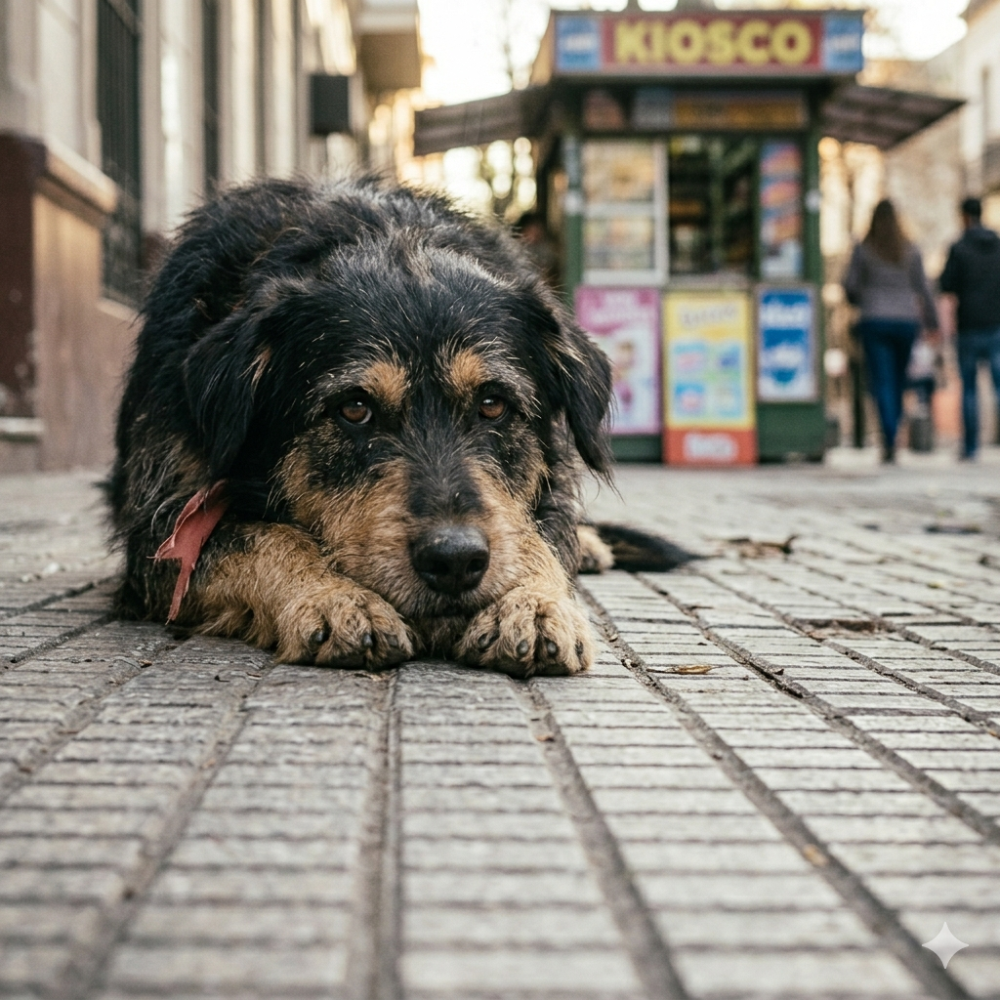

Nuestros programas
Conocé nuestros programas destinados a mejorar la vida de los perritos.
1. Programa de Tránsito Temporal
Hogares seguros y temporales para perritos rescatados mientras esperan una familia definitiva. Nos encargamos de todos los gastos médicos.
A familias o personas responsables que cuenten con espacio, tiempo en sus hogares, y que tengan mucho amor para dar.
Completando el formulario en nuestra página de Contacto e indicando que querés ser hogar de tránsito.

2. Campañas de Castración Gratuita
Organizamos jornadas mensuales de castraciones junto a veterinarios para controlar la población de animales en situación de calle de manera ética.
Los interesados pueden acercarse con sus mascotas, de bajos recursos y a perritos callejeros que son traídos por vecinos de la zona.
Para participar de las campañas, hay que pedir turno a través de nuestras redes sociales o llamando a nuestro número de teléfono para reservar un cupo.

3. Voluntariado Activo
Un programa fundamental para aquellos que desean involucrarse activamente en el refugio, ayudando con la limpieza de los caniles, los paseos diarios y el cuidado general de los animales.
A personas mayores de 18 años, apasionadas por los animales y con una disponibilidad mínima de al menos 4 horas semanales.
Escribiéndonos un correo a voluntarios@patitasunidas.org.ar con tus datos completos para coordinar una entrevista y visita al refugio.
Preguntas Frecuentes
- ¿Tengo que pagar para ser hogar de tránsito?
No, la ONG cubre la totalidad de los gastos de alimento y atención veterinaria del animal.
- ¿Puedo donar insumos para las campañas de castración?
¡Sí! Siempre aceptamos cualquier tipo de donación. Escribinos a nuestro email.
- ¿Tengo que pagar para ser voluntario?
¡No! El voluntariado es gratuito.